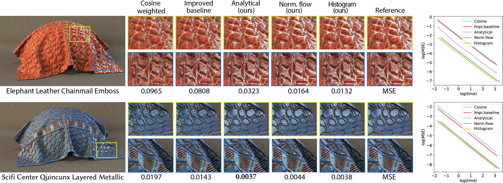
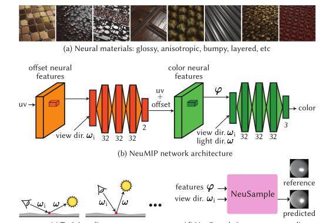
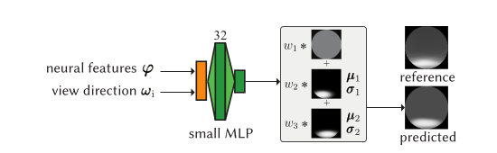

Analytic-lobe mixtures
Fast and easy to integrate, but a few Lambertian and Gaussian lobes cannot represent every shifted, anisotropic, or multi-modal highlight.
We provide a toolbox for importance sampling spatially varying neural materials. Pick a method according to the complexity of your materials.

Neural materials can reproduce complex spatially varying appearance, including displacement, anisotropy, and layered reflectance. But a Monte Carlo renderer needs three operations: evaluate the material, sample a direction, and evaluate that sample's probability.
The first operation received most of the attention. Without the other two, a renderer falls back to cosine sampling or a rough analytic approximation and spends rays in directions where the material contributes little.

Fast and easy to integrate, but a few Lambertian and Gaussian lobes cannot represent every shifted, anisotropic, or multi-modal highlight.
Expressive, normalized, and invertible. Our lightweight spline flow handles difficult distributions well, but its inference cost matters in simpler scenes.
Predict weights, rotations, and latent coordinates for shared basis histograms, then bake the result into a tensor for efficient rendering. This is our default recommendation.

Neural material representations have recently been proposed to augment the material appearance toolbox used in realistic rendering. These models are successful at tasks ranging from measured BTF compression, through efficient rendering of synthetic displaced materials with occlusions, to BSDF layering. However, importance sampling has been an after-thought in most neural material approaches, and has been handled by inefficient cosine-hemisphere sampling or mixing it with an additional simple analytic lobe. In this paper we fill that gap, by evaluating and comparing various pdf-learning approaches for sampling spatially varying neural materials, and proposing new variations of these approaches. We investigate three sampling approaches: analytic-lobe mixtures, normalizing flows, and histogram prediction. Within each type, we introduce improvements beyond previous work, and we extensively evaluate and compare these approaches in terms of sampling rate, wall-clock time, and final visual quality. Our versions of normalizing flows and histogram mixtures perform well and can be used in practical rendering systems, potentially facilitating the broader adoption of neural material models in production.
Recent projects explore closely related neural-material representations and sampling strategies.
@article{Xu:2023:NeuSample,
author = {Bing Xu and Liwen Wu and Milo\v{s} Ha\v{s}an and Fujun Luan and Iliyan Georgiev and Zexiang Xu and Ravi Ramamoorthi},
title = {NeuSample: Importance Sampling for Neural Materials},
journal = {ACM Transactions on Graphics (Proceedings of SIGGRAPH)},
year = {2023},
volume = {42},
number = {4},
doi = {10.1145/3588432.3591524}
}This work was partly funded by NSF grants 2105806, 2212085, 2110409, gifts from Adobe and Google, the Ronald L. Graham Chair, and the UC San Diego Center for Visual Computing. We thank Krishna Mullia and Alexandr Kuznetsov for their help with NeuMIP and the anonymous reviewers for their constructive feedback. We used free 3D models from Turbosquid authored by users CGuru, BehTab, Neilvan and poker82.